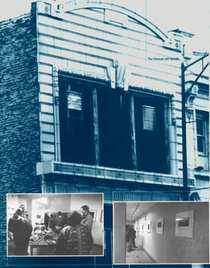
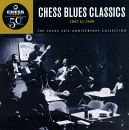
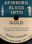

 |
CHESS RECORDS
ЧЕСС РЕКОРДЗ ("Шахматные записи") - Американская фирма звукозаписи, ставшая эпицентром формирования послевоенного электрического городского блюза (т.н."чикагского блюза"), в свою очередь послужившего основой для развития рок-н-ролла и современной рок-музыки; на фирме выходили записи всех, кто ныне считается "классиками" чикагского блюза.
|
Фирму основали братья Леонард и Фил Чесс (Leonard & Phill Chess), дети польских эммигрантов, поселившихся в Чикаго в 1928г.. В конце 30-х Чесс постепенно становились обладателями сети развлекательный учреждений в черных кварталах города. Обратив внимание на недостаток "рассовых" пластинок, Чесс решили занять пустующую нишу в шоу-бизнесе. В 1947г. они преобрели местную фирму "Аристократ", которая вскоре была переименована в "Чесс". Первые записи фирмы вполне соответствовали обычной продукции "расовой" звукозаписи: городские ритм-энд-блюзы с небольшим свинг-оркестром или традиционные акустические кантри-блюзы. В рамках кантри-блюза делал свои первые записи на "Чесс" Мадди Уотерс (Muddy Waters). Однако в последующие три года он в корне меняет свой исполнительский стиль и создает формат электрического блюзбэнда (послуживший впоследствии и рок-н-роллу, и рок-музыке). Блюз приобретает абсолютно новое звучание. В начале 50-х на "Чесс" приходит Уилли Диксон (Willie Dixon), который становится автором большинства хитов, записанных в студии, аранжировщиком и искателем новых талантов. В 50-х к "Чесс" (или дочерней фирме "Чекер" (Cheker) присоединяются артисты, уже завоевавшие себе имя записями в других студиях (Хаулин Вулф (Howlin' Wolf), Санни Бой Уилльямсон (Sonny Boy Williamson), Элмор Джеймс (Elmore James)). Восходят новые звезды в стилях блюз, ритм-энд-блюз, и рок-н-ролл: Литл Уолтер (Little Walter), Литл Милтон (Little Milton), Джимми Роджерс (Jimmy Rogers), Чак Берри (Chuck Berry), Бо Диддли (Bo Diddley), Коко Тейлор (Koko Taylor). На другой дочерней фирме "Арго" (Argo) записывались звезды джаза и соул: Уэс Монтгомери (Wes Montgomery), Этта Джеймс (Etta James), Ахмад Джамал (Ahmad Jamal) и др. После смерти Леонарда Чесса в 1969 году дела фирмы за несколько лет пришли в коммерческий и творческий упадок. Пройдя через несколько рук, архивы Чесс стали собственностью "ЭмСиЭй" (MCA).
Чесс чрезвычайно успешно работали в области афро-американской музыки, которая именно при них утратила обозначение "расовые записи". Их фирма собрала почти весь цвет блюза своего времени, и инновации в музыке именно этих артистов определили основополагающие пути развития блюза на многие десятилетия вперед. Историки популярной музыки называют Чака Берри основоположником рок-н-ролла. О почтении, которое испытывали к фирме Чесс родоначальники рок-музыки, свидетельствует тот факт, что суперзвезды 60-х: "Энималз"(Animals), "Роллинг Стоунз" (Rolling Stones), "Флитвуд Мэк" (Fleetwood Mac) и др. - приезжали в ее давно устаревшие студии для записи новых альбомов, поскольку именно пластинки, записанные здесь, вдохновили их когда-то попытаться играть музыку по-новому.
ВЭБ™'99

Дискография:
- Chess Blues (MCA/Chess 4CD, 1992)
- Chess Blues-Rock Songbook (MCA/Chess 2CD, 1997)
- The Aristocrat of the Blues (MCA/Chess 2CD, 1997)
- Chess Blues Classics 1947-56 (MVA/Chess CD, 1997)
- Chess Blues Piano Greats (MVA/Chess 2CD, 1997)
- Chess Blues Guitar : Two Decades Of Killer Fretwork, 1949-1969 (MVA/Chess 2CD, 1998)
- Chess Soul (MCA/Chess 2CD, 1997)
- Chess New Orleans (MCA/Chess 2CD, 1996)
- Chess Rhythm & Roll (MCA/Chess 4CD, 1996)
- None But The Righteous: Chess Gospel Greats (MCA/Chess CD, 1996)
 Не вижу причин, почему бы 4-х компактовой коробке "Чесс-Блюз" не украшать каждую коллекцию блюзовых записей... Разве что цена?.. Но для понимания пути блюза по ХХ веку эта "коробка" совершенно необходима. В ней вы найдете общеизвестные хиты "классиков" и незаслуженно обойденные вниманием шедевры незнаменитых блюзменов, первые шаги мастеров модерн-блюза и последние работы блюзовых титанов довоенного поколения... Здесь именно то, что вы ожидали услышать от "Чесс" и то, что переворачивает устоявшиеся представления... В общем, это должен услышать каждый! Не вижу причин, почему бы 4-х компактовой коробке "Чесс-Блюз" не украшать каждую коллекцию блюзовых записей... Разве что цена?.. Но для понимания пути блюза по ХХ веку эта "коробка" совершенно необходима. В ней вы найдете общеизвестные хиты "классиков" и незаслуженно обойденные вниманием шедевры незнаменитых блюзменов, первые шаги мастеров модерн-блюза и последние работы блюзовых титанов довоенного поколения... Здесь именно то, что вы ожидали услышать от "Чесс" и то, что переворачивает устоявшиеся представления... В общем, это должен услышать каждый!  На Chess Blues Classics можно послушать только самое знаменитое из записанного на "Чесс". Хорошая пластинка для начинающего, но, если вы продолжите, рано или поздно все эти песни окажутся продублированными на более полных дисках, которые вам захочется купить. Ну и что? Можно будет подарить следующему начинающему. На Chess Blues Classics можно послушать только самое знаменитое из записанного на "Чесс". Хорошая пластинка для начинающего, но, если вы продолжите, рано или поздно все эти песни окажутся продублированными на более полных дисках, которые вам захочется купить. Ну и что? Можно будет подарить следующему начинающему.
Двойник Chess Blues Piano Greats - очень хорошее собрание записей 4 певцов-пианистов, сотрудничавших с "Чесс": Эдди Бойда (Eddie Boyd), Уилли Мейбуна (Willie Mabon), Отиса Спэнна (Otis Spann) и Лафайета Лика (Lafayette Leake). Эта подборка - для знатоков и "гурманов". Подобный же гитарный сборник представляет широкий выбор имен; и снова общеизвестные записи соседствуют с любопытными редкостями.
Второй диск в списке наглядно демонстрирует, что рок-музыка одолжила у блюза - а больше всего она позаимствовала у мастеров чикагского цеха. "Аристократ блюза" - каламбур вокруг изначального названия "Чесс"; т.е. предлагаются ранние записи, сделанные до 1950г. Последние четыре альбома, как понятно из названий, - компиляции по стилям. Строго говоря, чессовский соул - не лучший, а госпел - непрекрыто коммерческий. Но для того, кто проникнется чессовским саундом, любой из этих альбомов будет отрадой души... А все вместе - блюзовой нирваной.
 Книга Н.Коходас об истории фирмы "Чесс": "Обращая блюз в золото" (Nadine COHODAS "Spinning Blues into Gold. The Chess Brothers and the Legendary Chess Records").
В сети:
 Именной сайт на сервере MCA - такой же путанный, как переиздания чессовских записей на этой фирме. Именной сайт на сервере MCA - такой же путанный, как переиздания чессовских записей на этой фирме.
|